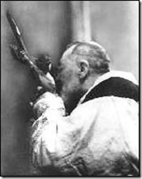
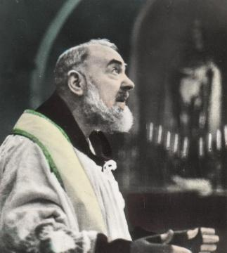
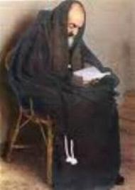

“AS TRAMAS DO DEMÔNIO”
O
diabo teve um papel de realce na vida do Padre Pio, porque procurava tentá-lo por todos
os meios, tecendo armadilhas para dobrar a sua vontade, a fim de cansá-lo e desviá-lo
de seus santos propósitos, querendo interferir na sua obra em benefício da
humanidade. E
o Padre sempre lutou valentemente e também aconselhava 
Os ataques diabólicos contra o Padre Pio eram espantosos, o demônio se apresentava de diferentes maneiras: ora por meio de formas que lhe atormentavam os sentidos, ora sob um aspecto horrivelmente tenebroso, ora atacando o seu intelecto e sua vontade, de modo a impedir o progresso de seu amor a DEUS.
DEUS sabedoria infinita conhece a capacidade física e mental de cada pessoa. A grandeza do Amor Divino jamais permitirá que alguma tentação seja maior do que o limite humano. A permissão concedida por JESUS aos demônios para atacar o Padre Pio, é pelo fato dele representar um baluarte formidável entre as pessoas e as forças do mal, que sempre impediu o demônio de atuar sobre os mais fracos e mais expostos as tentações. Assim sendo, o enfurecimento do demônio é devido não apenas ao seu ódio em relação ao Padre, mas ao obstáculo intransponível que ele representava e que protegia as pessoas que procuram o seu auxílio. Esta força admirável que o Padre Pio recebeu de DEUS tinha uma intensidade incalculável e eram graças muito especiais pelo seu combate perseverante contra o maligno, e ele na sua humilde e perseverante caridade colocava em benefício de todos que necessitavam e buscavam o seu eficaz auxílio.
Particularmente, o Padre Pio tinha pavor de Satanás, mas o que o aterrorizava verdadeiramente era o pensamento de ofender a DEUS. Dizia ele: “Estas tentações me fazem tremer da cabeça aos pés de medo de ofender ao SENHOR. Não tenho medo de nada, a não ser das ofensas ao nosso DEUS”.


UMA AMEAÇA DO DEMÔNIO
Em 1906 aconteceu um dos primeiros contatos entre o príncipe do mal e o Padre Pio. O Padre tinha retornado ao Convento de Sant'Elia de Pianisi. Numa noite de verão em que ele não conseguia dormir por causa do grande calor ouviu barulho de passos no quarto vizinho, caminhando de um lado para o outro. Padre Pio pensou: "O pobre Anastácio não está conseguindo dormir. Vou chamá-lo, pois, pelo menos conversamos um pouco". Levantou-se e foi até a janela para chamar o confrade, mas sua voz permaneceu presa na garganta, quando viu no parapeito da janela vizinha, um monstruoso cão com uma terrível cara. Assim contou o próprio Padre Pio: “Então, vi horrorizado entrar pela porta de meu quarto aquele cão feroz de cuja boca saia muita fumaça. Pulei de bruços na cama e invoquei JESUS. Ouvi o que o cão dizia”:“É este, é este aqui!”.“Ainda naquela posição na cama vi a fera pular para o parapeito da janela e de lá se lançar sobre o telhado da frente, desaparecendo em seguida”.


MODOS DO DEMÔNIO ATUAR
Padre Agostino, Confessor do Santo, confirmou que o diabo apareceu ao Padre Pio de diferentes formas: "Apareceu como meninas jovens que dançavam nuas, e apareceu em forma de crucifixo, também como um jovem amigo dos monges, apareceu ainda como o seu Diretor Espiritual, como o Padre Provençal, também como o Papa Pio X, como o seu Anjo da Guarda e como São Francisco de Assis. O diabo também apareceu nas suas formas horríveis, com um exército de espíritos infernais. Às vezes não havia nenhuma aparição, mas Padre Pio ficava ferido, torturado com barulhos ensurdecedores, cusparadas, etc. Padre Pio sempre teve sucesso, livrando-se destas agressões invocando o nome de JESUS”.


LUTA CONTRA SATANÁS
As lutas entre Padre Pio e Satanás ficavam mais duras quando ele livrava as almas que já estavam quase na posse do Diabo. Mais de uma vez, falou ao Padre Tarcísio de Cervinara que, antes de ser exorcizado, o Diabo gritava: "Padre Pio você nos dá mais preocupação que São Miguel Arcanjo", e também: "Padre Pio, não tire as almas de nós e nós não o molestaremos".


TRUQUES DO DEMÔNIO
Carta para Padre
Agostino, de 18 de Janeiro de 1912.
"... O Barba Azul (o demônio) não quer ser derrotado. Ele sempre chega assumindo todas
as formas, durante vários dias, visitando-me com seus espíritos infernais armados
com bastões de ferros e pedras. O pior é que eles vêm com os seus próprios semblantes,
aquelas caras horríveis e asquerosas. Várias vezes eles me tiraram da cama e me
arrastaram pelo quarto. Mas JESUS, NOSSA SENHORA, meu Anjo da Guarda, São José
e São Francisco de Assis, estão frequentemente
comigo."



AS PERSEGUIÇÕES CONTRA O PADRE
Carta para
Padre Agostino, 5 de Novembro de 1912.
"Querido
padre, esta é a segunda carta que lhe escrevo, graças a DEUS, e segue com o
mesmo conteúdo da anterior. Estou seguro que Padre Evangelista já o informou sobre
a nova guerra que os apóstatas impuros estão fazendo contra mim. Meu Padre, eles não
podem vencer a minha resistência. Eu lhe informo sobre as armadilhas que eles
gostam de me induzir me privando de suas orientações. Eu encontro nas cartas o
meu único conforto. Mas para glorificar a DEUS e produzir confusão neles, eu
aguentarei tudo. Eu não posso explicar aqui, como eles estão me cercando. Às
vezes penso que vou morrer. Sábado passado pensei que realmente eles queriam me
matar, eu não sabia a que santo pedir ajuda. Então, supliquei ajuda a meu Anjo
da Guarda, e depois de esperar um longo tempo, finalmente ele voou ao redor de
mim e com sua voz angelical cantou um hino a DEUS. Então aconteceu uma dessas
cenas em família. Zanguei com ele severamente porque me tinha feito esperar
tanto pela ajuda, apesar de minha súplica ter sido urgente. Assim, meio
tristonho, dei-lhe um castigo, não quis olhar para a sua face. Eu queria que ele
recebesse um castigo para ser mais pontual, mas ele quis escapar. Percebi que
ele ficou sentido e estava chorando. Então, arrependido de ter sido exigente, o
fixei e nós dois acabamos sorrindo juntos".


CARTA PARA O CONFESSOR
Carta para
o Padre Agostino datada de 18 de Novembro de 1912.
"O inimigo não quer me deixar,
me bate continuamente. Ele tenta envenenar a minha vida com armadilhas infernais. Ele
fica mais perturbado, porque lhe escrevo e conto todos estes fatos. O demônio me
sugere não lhe contar as coisas que acontecem entre ele e eu. Ele me pede que
narre as visitas boas que recebo. Na realidade ele me disse que você só gosta
destas histórias. O pastor (o Senhor Bispo Diocesano) foi informado destas
batalhas que travo com estes demônios e com referência às cartas que lhe
escrevo. Então me sugeriu ir até ele, mostrar primeiro a minha carta para ele
ver e depois, lhe mostrar a sua quando chegasse. Agora, atualmente, quando abri
a sua carta junto do pastor, encontramos a carta suja de tinta. Era vingança do
diabo! Eu não posso acreditar que você me tenha enviado a carta suja porque você
sabe que eu não enxergo bem. No princípio não pudemos ler a carta, mas depois de
sobrepor o Crucifixo em cima da carta, tivemos sucesso na leitura, até mesmo
sendo capazes de ler as letras pequenas”.


ATAQUES DO DEMÔNIO - 1
Carta para
o seu Confessor, Padre Agostino, 13 de Fevereiro de 1913.
"Agora, vinte e dois dias passados
desde que JESUS permitiu aos diabos descarregarem a raiva deles em mim, meu corpo, meu
Padre, até o presente está todo marcado pelos golpes que recebi. Várias vezes,
tiraram minha camisa e me golpearam de forma brutal".


ATAQUES DO DEMÔNIO - 2
Carta para
o Diretor Espiritual, Padre
Benedetto, 18 de Março de 1913.
"Os diabos não deixam de
me golpear e me tiram da cama. Removem a minha camisa para bater em mim. Mas agora eles já não
me assustam mais. JESUS me ama, me levanta e me coloca na cama".


O DEMÔNIO QUIS LUDIBRIAR O PADRE

“Um dia, enquanto estava
ouvindo confissões, um homem veio ao confessionário. Era alto, esbelto, vestido
com refinamento, cortês e amável. Começou a confessar os seus pecados, que eram
de todo tipo: contra DEUS, contra os homens e contra a moral. Todos os pecados
eram gravíssimos! Eu fiquei desorientado com aquela montanha de pecados, e
respondi: trago-lhe a Palavra de DEUS, o exemplo da Igreja e a moral dos Santos.
Mas o penitente enigmático se opôs às minhas palavras justificando, com extrema
habilidade e cortesia, todos os tipos de pecados que ele tinha praticado. E
dessa forma, queria justificar todas as suas ações pecadoras, tentando me
convencer como se elas fossem absolutamente normais e humanamente
compreensíveis. E isto, inclusive para os pecados que eram horríveis contra
DEUS, NOSSA SENHORA e os Santos. Também permaneceu firme na argumentação dos
pecados morais que eram tão sujos e tão repugnantes, que me deixaram meio
abatido. As respostas que me deu, com fineza qualificada e malícia, me
surpreenderam. Num curto silêncio eu me perguntei: Quem é ele? De que mundo ele
vem? Tentei olhar bem para ele e ler algo na sua face. Ao mesmo tempo me
concentrei e procurei meditar em cada palavra dele para lhe dar o juízo correto
que merecia, mostrando-lhe que não tinham cabimento aquelas justificativas
absurdas que ele apresentava. Mas de repente através de uma luz interna
intensa e brilhante, reconheci claramente quem era ele, pois era justamente o
terrível e abominável demônio. Com tom definido e imperioso lhe falei”:
“Diga Viva JESUS
para sempre, Viva MARIA eternamente”.“E logo que pronunciei estes doces e poderosos
nomes, satanás imediatamente desapareceu num ziguezague de fogo deixando
para trás um fedor insuportável”.


JESUS AFASTOU UMA INVESTIDA DO DEMÔNIO
Dom Pierino Galeone (além de sacerdote era um dos filhos espirituais do Padre Pio), ele conta:
"Um dia, Padre Pio estava no confessionário e as cortinas do confessionário não estavam fechadas, de onde eu estava, podia vê-lo sem dificuldade. Os homens se preparavam e se organizavam numa fila única e, eu estava lendo o Breviário. Às vezes, erguia o olhar para ver o Padre. Então, pela porta da pequena Igreja, entrou um senhor. Parecia idoso, estava sério e tinha os olhos pequenos e pretos, cabelos grisalhos, usando uma jaqueta escura e calças compridas. Eu não quis me distrair e continuei recitando o breviário, mas uma voz interna me falou: Pare e olhe! Eu parei e olhei para o Padre Pio. Aquele homem parou em frente ao confessionário. E depois que o penitente que estava se confessando saiu, ele passou na frente dos outros que aguardavam na fila. Ficou em pé, de frente para o Padre Pio. Foi falada algumas palavras que não percebi. Então não vi mais aquele homem de cabelos grisalhos. Depois de alguns minutos o vi penetrando no chão. No confessionário, na cadeira onde Padre Pio estava sentado, vi JESUS em seu lugar. Ele era loiro, jovem e muito bonito e parecia olhar fixamente aquele homem que penetrava no chão. Então, logo a seguir, vi surgir novamente o Padre Pio. Ele voltou a tomar assento no confessionário e se apresentava tranquilo e com uma agradável fisionomia, semelhante a JESUS. Então pude ver claramente o Padre Pio em atividade, ele havia reassumido a sua função de confessor. Imediatamente ouvi sua a voz dizendo aos penitentes na fila”: “Se apressem”! “Ninguém notou este acontecimento e todos nós permanecemos onde estávamos". "O demônio quis atrapalhar a Confissão Sacramental, mas foi imediatamente expulso por JESUS".